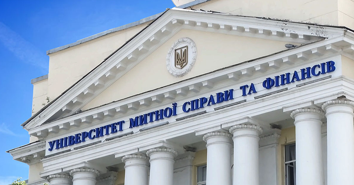

Юлія Вікторівна Ульяновська
Кандидатка технічних наук
Університет митної справи та фінансів
Факультет інноваційних технологій
Про мене
Завідувачка кафедри комп'ютерних наук та інженерії програмного забезпечення факультету інноваційних технологій університету митної справи та фінансів.
Дисципліни, що викладає: “Комп'ютерна дискретна математика”, “Сучасні методи теорії інформації та кодування”, “Теорія алгоритмів”, “Теорія прийняття рішень”, “Інтелектуальні системи підтримки прийняття рішень”, "Методи та системи штучного інтелекту".
Моя освіта
Закінчила Дніпропетровський національний університет за спеціальністю математика, викладач.
Присуджено науковий ступінь кандидата технічних наук.
Сертифікати


Наукова діяльність
Основні наукові та навчально-методичні праціОрганізаційна діяльність
в.о. завідувача кафедри інформаційних систем та технологій Університету митної справи та фінансів
завідувач кафедрі комп’ютерних наук та інженерії програмного забезпечення.
заступник відповідального секретаря приймальної комісії з вивчення документів вступників, які мають пільги на зарахування поза конкурсом (наказ № 34 від 20.02.2018 р.)
робота у складі журі міжнародного конкурсу візуальних презентацій «День острова Токто», який проводився в Університеті митної справи та фінансів за участі Посольства Республіки Кореї в Україні 04.06.2018 р.
заступник відповідального секретаря приймальної комісії з вивчення документів вступників, які мають пільги на зарахування поза конкурсом (наказ № 174 від 04.12.2019)
виконує обов’язки куратора групи К 21-1м.